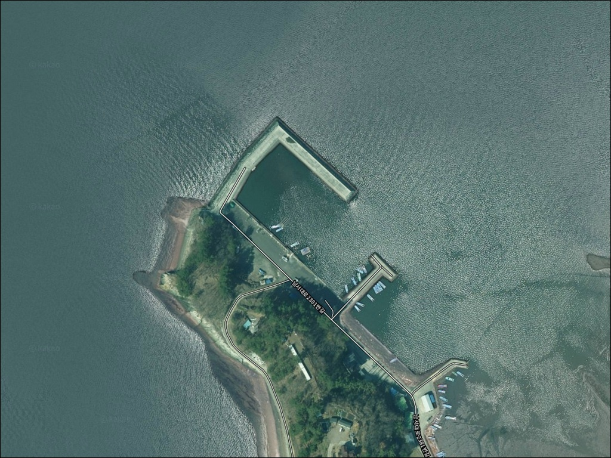
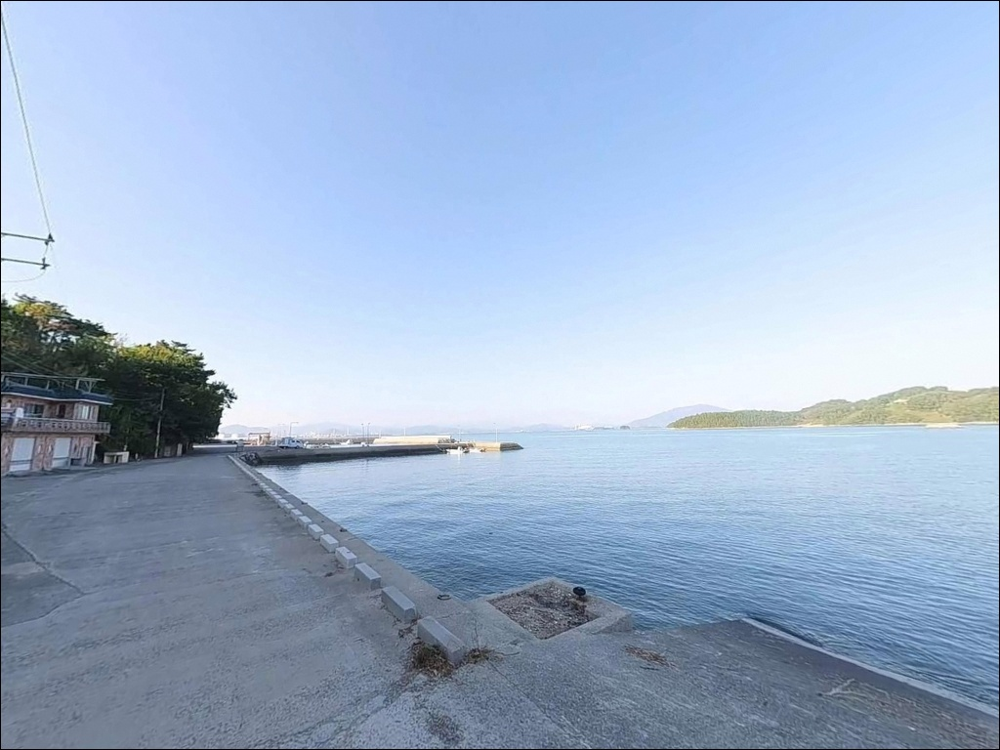
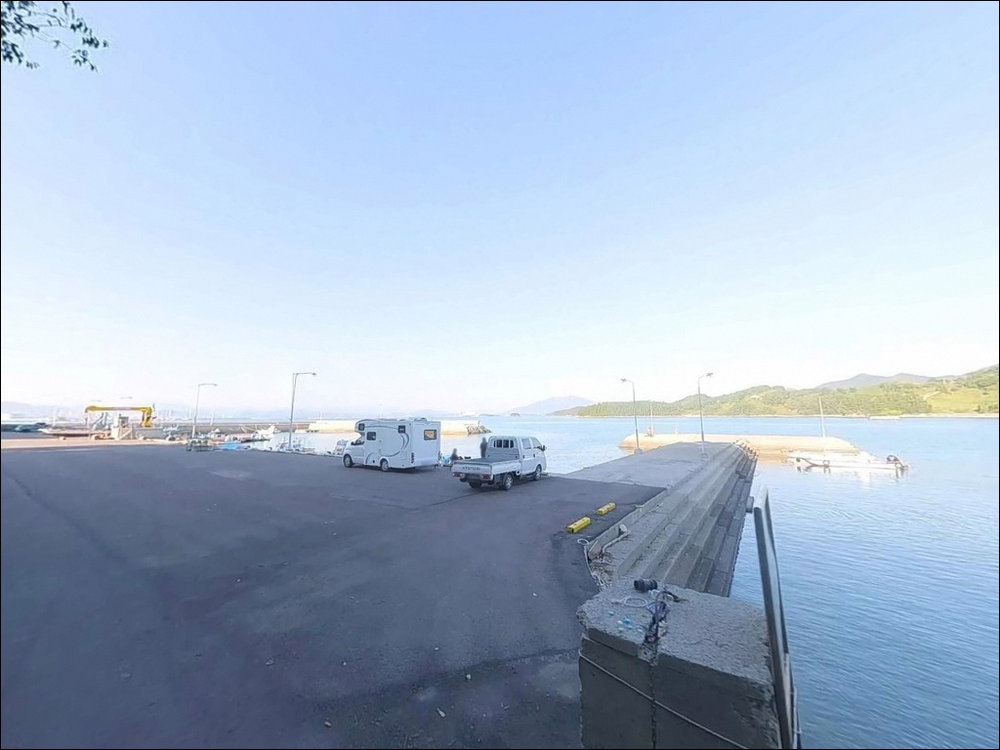
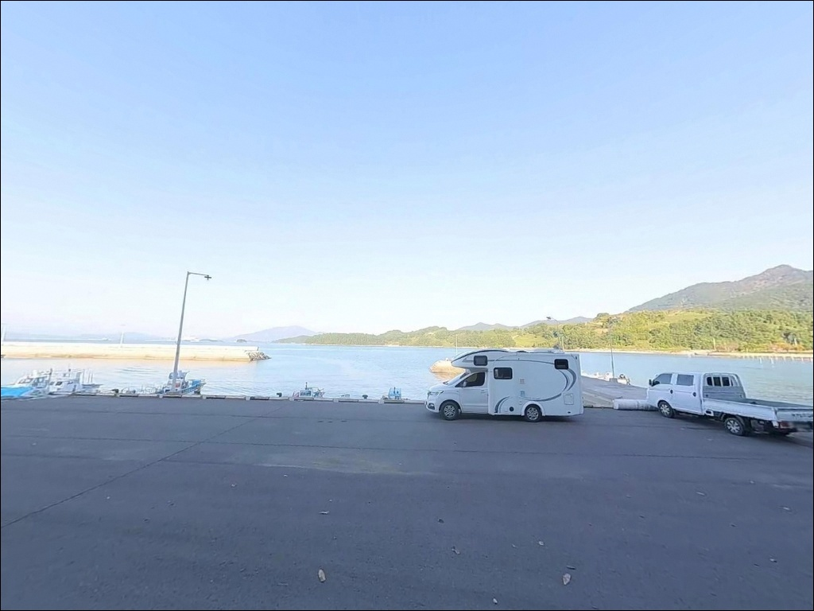
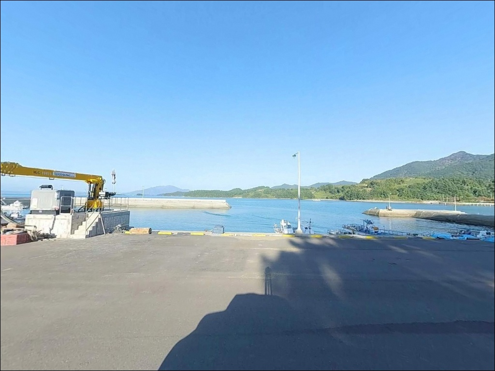
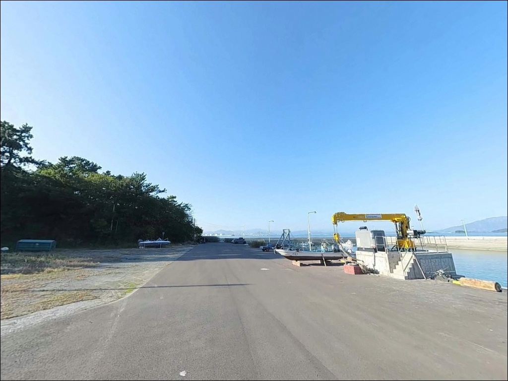
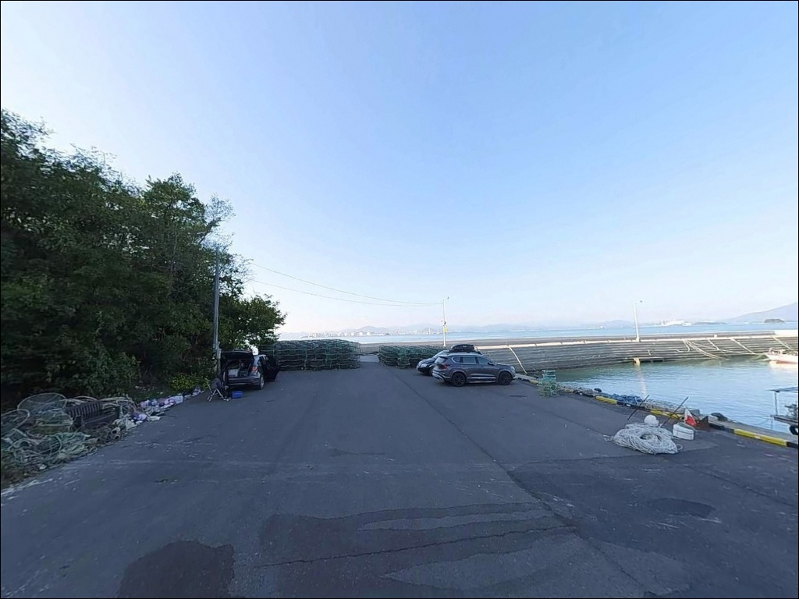
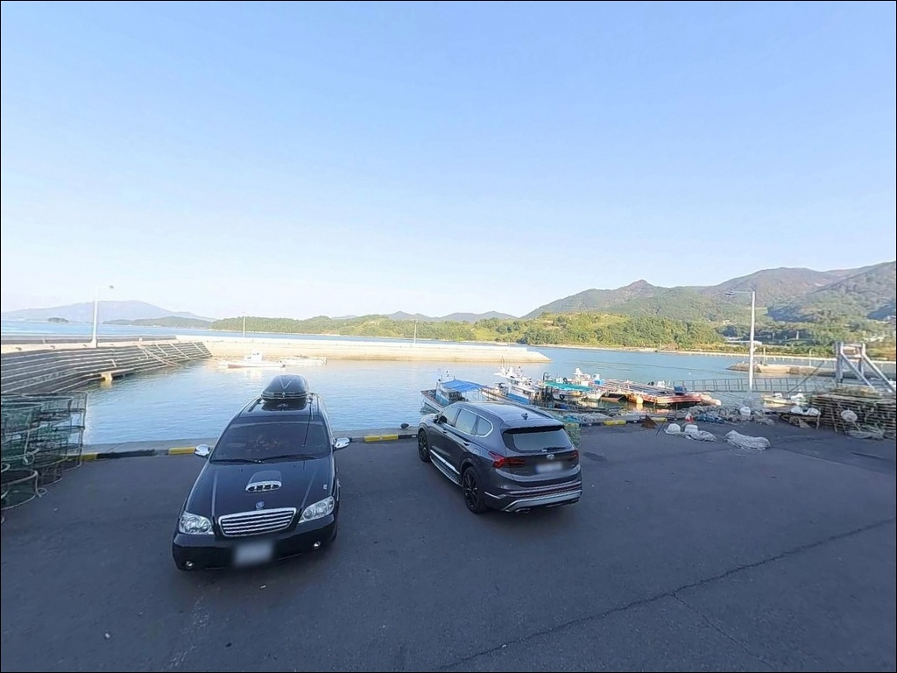
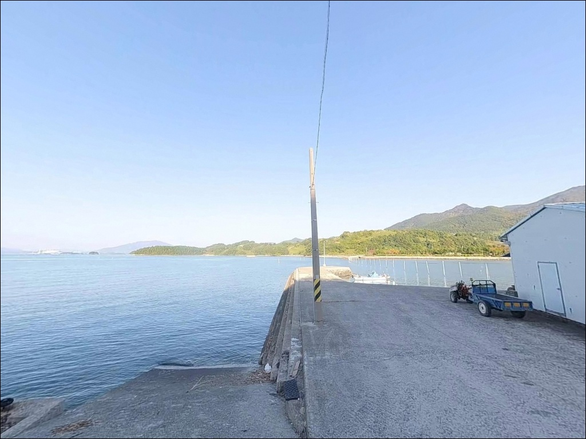

간조에 가면 바닥 드러나는 남해 유포선착장, 중조 만조 들물 타이밍에 살아난 입질
이 페이지에는 광고(제휴 링크 포함)가 있으며, 광고 링크를 통해 구매하면 운영자가 판매 수익 또는 수수료를 받을 수 있습니다. 포인트 사진: 카카오맵 스카이뷰·로드뷰. 이 페이지의 지도·사진 이미지는 카카오맵의 실제 서비스 이미지와 다를 수 있습니다.


포인트 안내
유포선착장
경남 남해군 서면 노구리 1416-11
갯벌 기반 해역에서 간조 타이밍에 도착하면
선착장 전면 수심이 크게 낮아져
어떤 채비를 던져도 운용이 어려워집니다.
유포선착장은 중조~만조 구간을 공략해야
유효 수심이 확보되는 구조로,
물때 계산이 출조 성패의 첫 번째 조건입니다.
경남 남해군 서면 노구리에 위치한 유포선착장은
1981년 지방어항으로 지정된 유포항 내 시설입니다.
방파제 150m, 물양장 150m 규모로
광양만을 마주 보는 방향으로 열려 있으며,
선착장 옆으로 갯바위 구간이 이어져
복수의 낚시 스타일을 하나의 포인트에서
운용할 수 있는 구조입니다.
이 글은 유포선착장의
진입 동선, 물때 판단 기준, 지형 분석,
낚시 방식별 공략 조건, 차박 여건에 집중합니다.
조황 단정이나 특정 어종 보장은
이 글의 범위에 포함되지 않습니다.

1. 진입 동선과 포인트 접근 조건
유포선착장 진입은 남해대교를 건너
고현면 방면에서 1024번 지방도를 따라
서면 노구리 방향으로 이어지는 루트가 기본입니다.
마을 진입로까지 전 구간 포장도로이며,
급경사 없이 진입이 수월한 편입니다.
어촌체험마을 이정표를 확인하고 진입하면
선착장 앞까지 차량 접근이 가능합니다.
유포어촌체험마을 안내소 앞 주차장은
대형 캠핑 차량도 수용 가능한 수준의 넓은 아스팔트 부지로,
회차 여건도 충분합니다.
선착장 주변 포구 앞 공터와
접안시설 뒤편 여유 공간도 주차 후보지로 활용됩니다.
다만 어선 계류 구역과 인접한 자리는
어업 동선을 막지 않는 위치를
먼저 확인하는 것이 기본 매너입니다.

2. 차박 환경과 야간 체류 여건
어촌체험마을 주차장은 차박 기반지로
활용하기에 적합한 구조입니다.
민가와 일정 거리가 있어 프라이버시는 보통 수준이며,
갯벌 해역 특성상 외항 파도 영향이 제한되어
바람 차단 여건은 비교적 양호한 편입니다.
유포마을 내 가로등이 일부 설치되어 있어
완전 암흑 환경은 아닙니다.
다만 야간 낚시 시 선착장 석축은
미끄럼 위험이 있으므로
개인 헤드랜턴과 보조 조명은 반드시 챙겨야 합니다.
광양만 건너 여천공단 방향 야경이
수평선에 펼쳐지는 독특한 야간 경관도 있습니다.
차박을 메인으로 삼기에는
편의시설 거리가 일정 수준 있으므로
식수, 얼음, 연료를 사전에 완비하는 것이
현실적인 준비 방식입니다.


3. 주변 편의시설 및 인프라 현황
유포선착장 인근에는
유포어촌체험마을 안내소가 위치하고 있습니다.
갯벌 체험장과 물놀이장이 인접한 구조로,
체험 마을 운영 기간에는 기본적인
주차 및 화장실 시설을 공유할 수 있는 환경입니다.
반경 3km 권역으로 이동하면
서면 소재지 방향의 소규모 편의점과
서상항 일대 상권을 이용할 수 있습니다.
낚시 소품이나 식료품이 필요하다면
서상항 방면 동선을 미리 파악해 두는 편이 좋습니다.
응급 상황 발생 시 남해읍 방면 병원까지
차량으로 15분 내외가 걸립니다.
비상약품과 연료는 출발 전에
갖추고 출조하는 것이 기본입니다.

4. 방문 전 준비사항 및 확인 포인트
유포선착장은 갯벌 기반 해역이라
조석 변화에 따른 수심 차이가 큽니다.
바다타임에서 노구리 기준 물때를 확인하고
중조~만조 구간에 맞춰 출발 시각을 조정하는 것이
이 포인트를 제대로 공략하는 첫 번째 조건입니다.
방파제 석축과 갯바위 구간은
조류 낙조류 최대 2.3kn 수준의
흐름이 형성되는 시간대가 있습니다.
채비 손실이 잦은 편이니
여분 채비는 넉넉하게 준비하는 편이 좋습니다.
갯벌 구간은 간조 시 고립 위험이 있는 지점이
형성될 수 있습니다.
처음 방문이라면 선착장 석축과 방파제 위주로
낚시 자리를 잡고,
갯벌 쪽은 물때를 확인한 뒤
접근 여부를 판단하는 것이 안전합니다.
야간 낚시 시에는 구명조끼 착용이 필수입니다.

5. 지형 기반 낚시 여건 분석
유포선착장은 방파제 150m, 물양장 150m 구조로
광양만 방향으로 열린 지방어항입니다.
방파제 끝단과 인접 갯바위 사이에서
수심 변화 구간이 형성되며,
테트라포드와 갯바위 경계면이 어류 은신처로
기능하는 지형 조건입니다.
수심은 전반적으로 얕은 편이며,
방파제 바로 앞 0.4~3.1m 구간이 기본 범위입니다.
낚시 가능한 유효 수심은 중조~만조 타이밍에 확보되며,
방파제 끝단에서 외측으로 나갈수록
수심 변화가 뚜렷하게 형성됩니다.
갯벌 기반 해역답게 바닥은
모래와 뻘이 혼재하는 구조이고,
방파제 뿌리 쪽과 갯바위 주변은 암반 지형으로 연결됩니다.
조류는 외항 노출 구조 특성상
들물 시 외항 방향으로 흐르는 흐름이 형성됩니다.
이 흐름을 공략하는 타이밍이
조과와 직접 연결되는 경우가 많습니다.
출조 전 남해 서면 일대 조황은
반드시 검색해 보시기 바랍니다.


6. 포인트 조건에 맞는 낚시 스타일
원투낚시는 이 포인트에서 가장 안정적으로 운용할 수 있는 방식입니다.
방파제 전면 모래·뻘 바닥을 겨냥해
채비를 멀리 던지는 방식으로,
도다리, 붕장어를 기대할 수 있는 구조입니다.
청갯지렁이 미끼가 갯벌 지반 특성에 유효하며,
만조 전후 타이밍에 집중하면 운용 효율이 올라갑니다.
에깅은 가을철 이 일대 해역에서
갑오징어와 쭈꾸미를 대상으로 유효한 방식입니다.
선착장 끝단에서 외측으로 캐스팅하고
들물 조류에 채비를 태우는 방식이
이 포인트 지형 조건과 잘 맞습니다.
수온이 안정되는 9~11월이 에깅 활성 시기입니다.
찌낚시는 갯바위와 석축이 맞닿는 구간에서
볼락과 노래미를 노리기 좋은 방식입니다.
잔잔한 만 내부 특성을 활용해
릴찌 채비로 들물 조류를 태우는 방식이 어울립니다.
야간이나 해질녘 소형 지그헤드 채비로
방파제 외항 테트라포드 경계면을 훑는
루어낚시도 볼락 대상으로 운용 가능합니다.

7. 대안 포인트와 플랜 B 동선
유포선착장에서 조건이 여의치 않을 때
가장 가까운 대안은
노구방파제입니다.
유포선착장 북쪽 약 1km 이내에 위치하며,
갯바위와 방파제가 복합된 구조로
에깅과 루어낚시 운용이 가능한 포인트입니다.
솔섬과 우미도를 조망하는 방향으로 자리를 잡을 수 있습니다.
서면 일대에서 남상방파제는
유포선착장 기준 약 2km 이내 거리로
조류가 안정적이고 발판이 편한 편입니다.
유포 조건이 물때와 맞지 않을 때
대기 없이 즉시 이동 가능한 플랜 B로
기본 동선에 넣어 두는 것이 좋습니다.
서면 서상리 방향으로 4~5km 이동하면
장항항방파제가 있습니다.
방파제 165m 규모로 장항해수욕장 몽돌해변과 인접하며,
노래미, 도다리, 게, 붕장어 등
다양한 어종 기록이 있는 포인트입니다.
차박 여건도 넓은 편이라
유포와 세트로 묶어 방문하기 좋은 동선입니다.

물때를 알면 유포선착장이
다르게 보입니다
원투낚시나 에깅을 즐기는 낚시인이라면
유포선착장의 갯벌 기반 지형은
물때를 맞출수록 가능성이 올라가는 구조입니다.
방파제 끝단과 갯바위 경계면,
들물 조류가 흐르는 타이밍을 조합하면
복수의 방식을 하나의 포인트에서
유연하게 운용할 수 있습니다.
반면 간조 타이밍이나 물때 확인 없이
무작정 들어가면 수심이 크게 낮아져
낚시 자체가 어려워지는 상황이 생깁니다.
물때 확인, 여분 채비 준비, 야간 조명 확보,
이 세 가지를 갖추고 간다면
기대 이상의 포인트가 될 수 있는 곳입니다.
유포어촌체험마을 주차장을 기반지로 삼고
하룻밤 머물며 낚시와 차박을 함께 즐기기에
진입 여건이 편한 포인트입니다.
광양만 건너 여천 방향 야경을 배경 삼아
조용한 어촌 앞바다에서 물때를 기다리는 출조가
이 포인트의 가장 잘 어울리는 방식입니다.